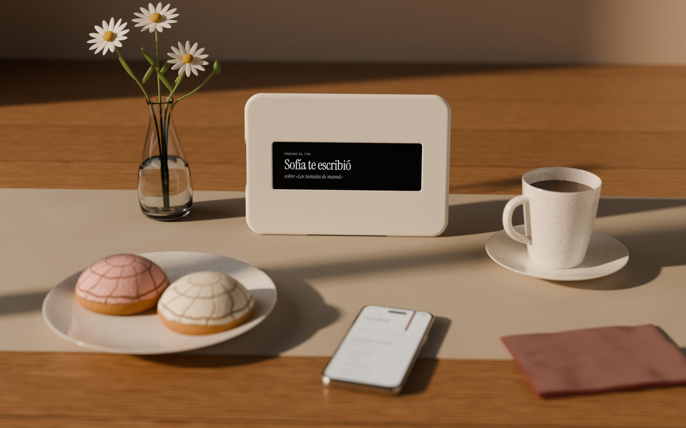
Grandma tells a story in Spanish. Her grandson hears it in English, in her own voice, and watches it come alive.
The Hearth sits on her kitchen table. She taps the window and tells a story in Spanish, the way she always has. No app, no typing.
Her words are transcribed and translated into English, read back in a clone of her own voice, and turned into a short film of the memory.
Her grandson opens the week on his iPhone, hears his grandma tell it, and answers. The reply shows up on the Hearth in Spanish.
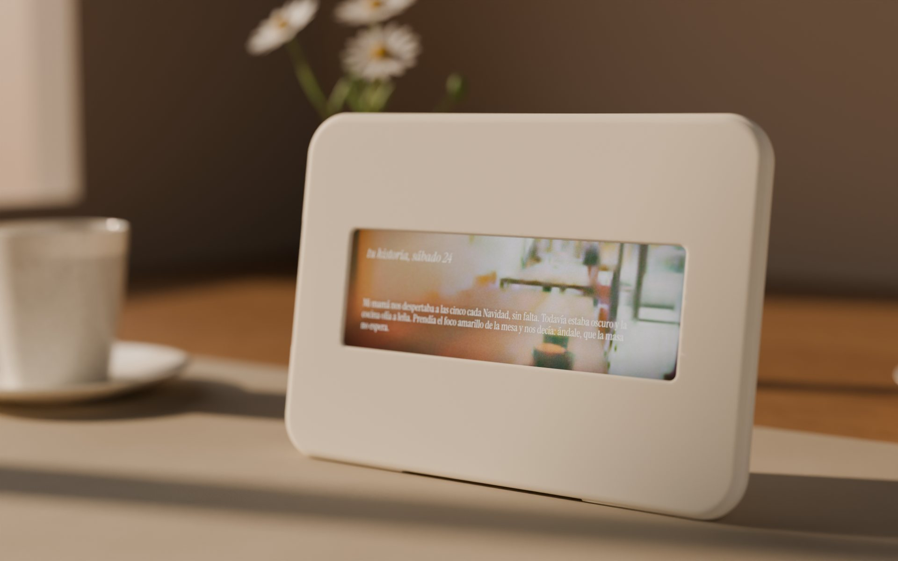
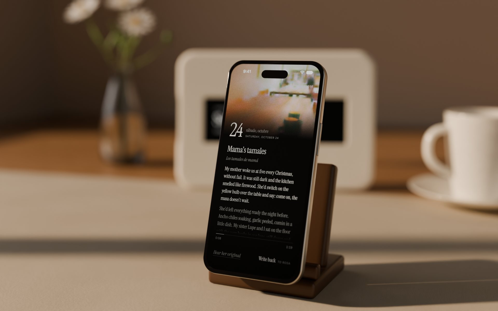
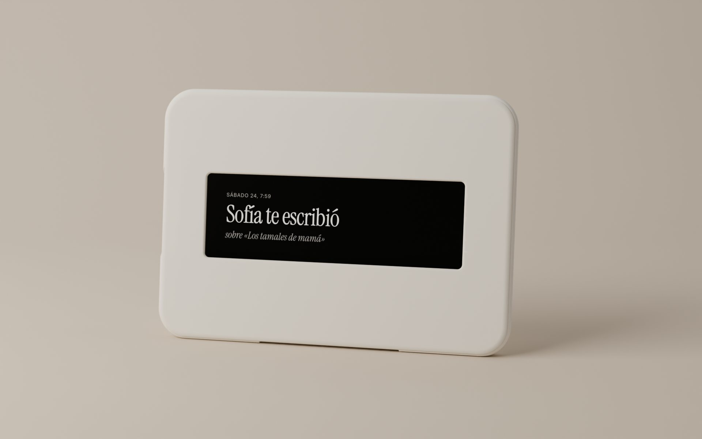
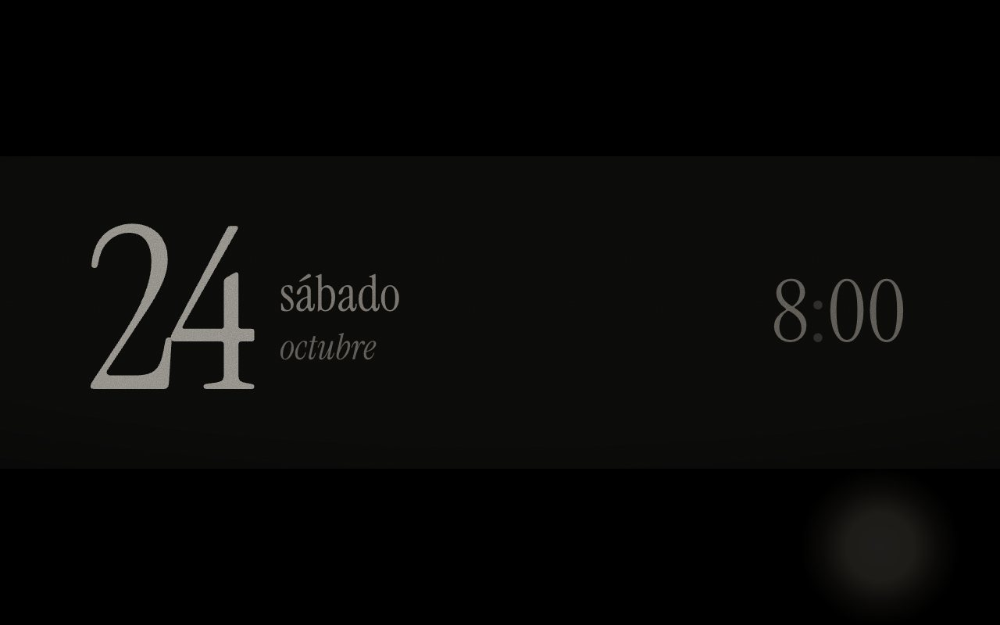
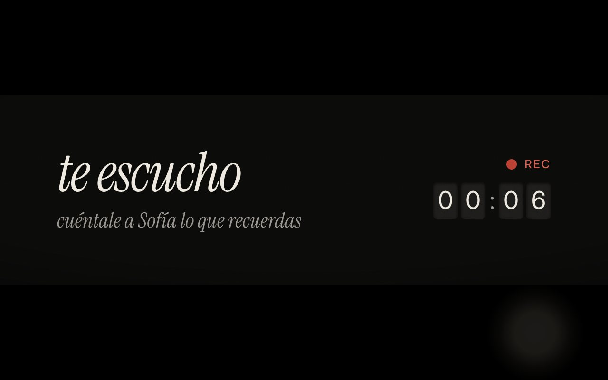
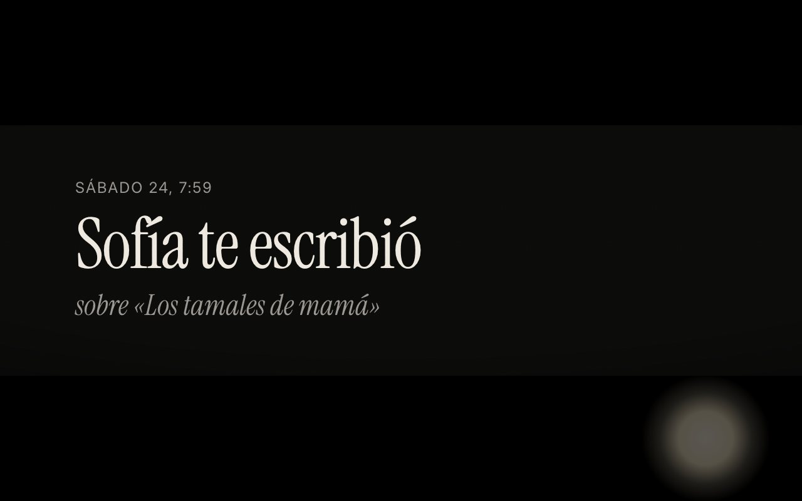
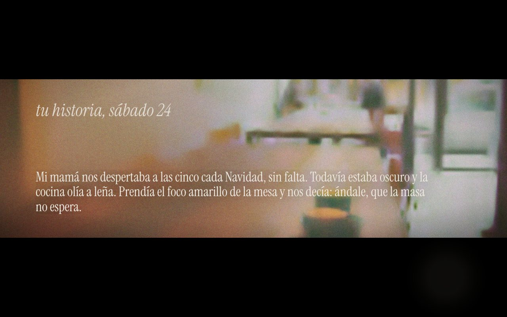
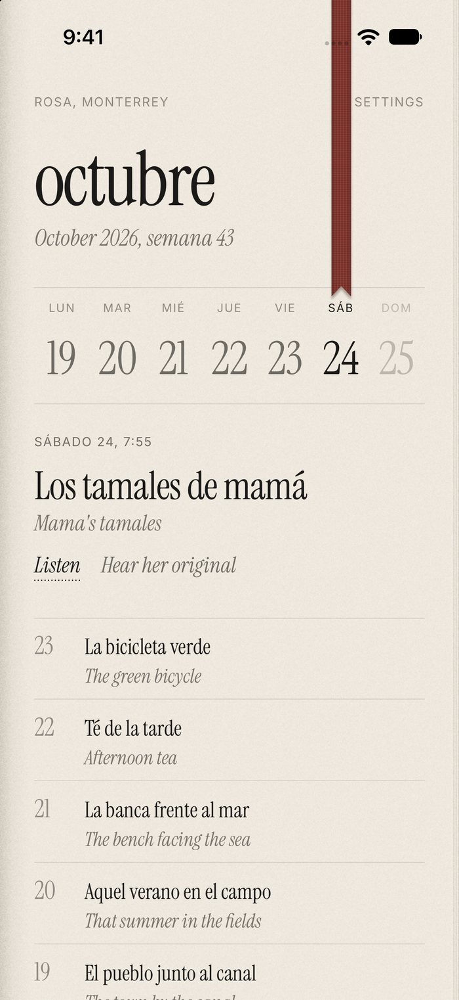
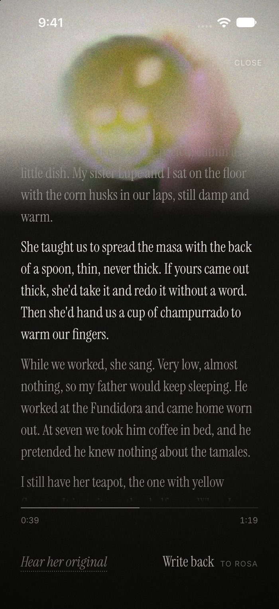
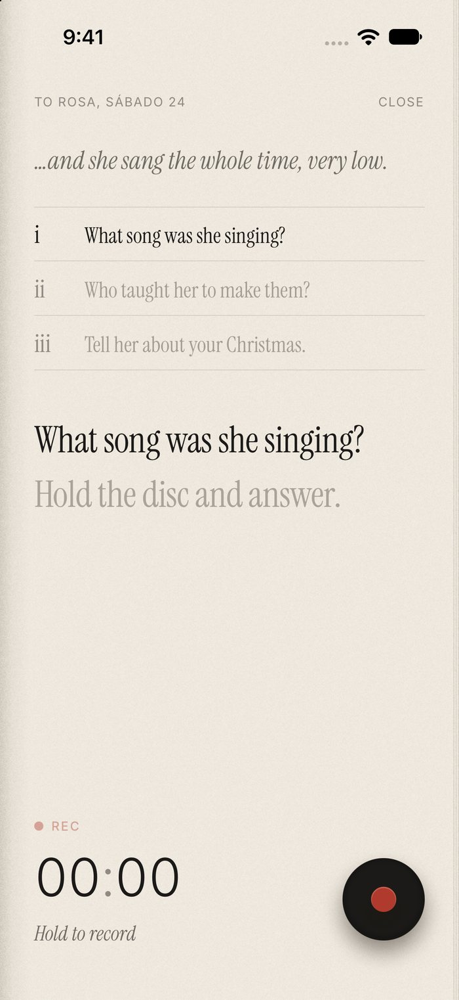
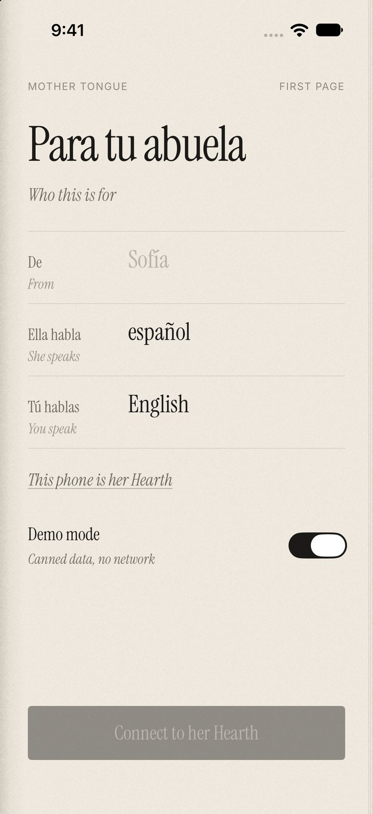